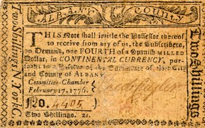

Jacob J. Cuyler
Jacob J. Cuyler was born in September 1741. He was the son of Johannes and Catharina Glen Cuyler. He was the youngest child in the relatively small family of a prominent second ward businessman. For most of his adult life, he was referred to as simply "Jacob Cuyler" probably because the other same named kin were a generation younger.
In March 1764, he married Lydia Van Vechten at the Albany Dutch church. By 1780, seven children had been christened in Albany where he was a pewholder and baptism sponsor.
These Cuylers lived on Pearl Street and were Albany mainstays for several decades. During that time, assessment rolls accorded his holdings a value comparable to other successful merchants. He served his community as firemaster, contractor, and was manager of the lottery during the early 1770s.
In 1767, he was left a share of the estate of his mother's brother.
In 1766, he joined his neighbors in signing the constitution of the Albany Sons of Liberty. In 1767, he was the first lieutenant in his cousin's Albany militia company.
In his thirties at the outbreak of hostilities, this active businessman, sloop owner, and cousin of the last royalist mayor of the city might be suspected of wartime profiteering. However, his loyalty to the crusade for American liberties was not to be called into question. He posted bonds and also acted as bailsman for a number of acquaintances.
For
the duration of that body's lifetime, Jacob Cuyler was a stalwart member
of the Albany Committee of Correspondence
- representing the second ward and being
re-elected year after year. He served in virtually all areas but was particularly
identified with procuring and delivering supplies to bolster the American
war effort. In 1778, he joined a number
of middle-aged patriots in signing an Association to serve on active duty
in the event of invasion. Earlier, he served as a delegate from Albany
to the New York Provincial Congress. He also served in the Continental
Commissary General's office. In May 1780, Colonel Jacob Cuyler applied
to the governor for exemptions from field duty for himself and members
of his staff. After the war, he was accorded a land
bounty right in conjunction with the Albany militia regiment. 
After the war, his life assumed a lower public profile with the exception of being named supervisor for the second ward in 1785. In 1790, his household included six family members and four slaves. A decade later, he seems to have either moved to the third ward, moved in with a kinsman, or relocated to the countryside.
Jacob J. Cuyler died in June 1804 and was buried in the Dutch church plot. His widow passed on four years later. He had lived for more than sixty-two years.
Likeness of a promissory note for two shillings issued by the Albany Committee and dated February 17, 1776. Signed on behalf of the committee by member Jacob Cuyler. Payable in Continental currency. Copied from the Internet, June 8, 2006 and of otherwise unknown provenance.